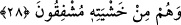

çocukları değildirler. Meleklerin Allah katında değerli olmaları, müşriklerin iddiâ
ettikleri gibi O’nun evlâdı olmalarını gerektirmez.
27. O’ndan (emir almazdan) önce konuşmazlar; onlar, sâdece O’nun emri ile
hareket ederler.
“O’ndan” emir almazdan “önce konuşmazlar;” “
” aslında yürüyüşte öne
geçmektir. Ama sonra diğer konularda öne geçme anlamında da kullanılmaya
başlamıştır. Yâni edebli köleler gibi son derece itaatkâr olmalarından ötürü Allah Teâlâ
kendilerine buyurup emretmedikçe onlar hiçbir şey söylemezler.
Kâşifî der ki: “Yâni, Allâh’ın izni ve müsâadesi olmadan söz söylemezler. Bu sözden
murad, kâfirlerin meleklerden şefâat ümidini kesmektir. Yâni onlar Allâh’ın izni
olmaksızın şefâat edemezler.”
“Onlar, sâdece O’nun emriyle hareket ederler.” Onlar, söylediklerini O’nun emri ile
söyledikleri gibi yaptıklarını da O’nun emri olmadan değil, O’nun buyruğu ile yaparlar.
Âyette işâret vardır ki Allâh’a yakın olmak ve O’na ermek lütuf ve ihsânına erdirilen
kullar, kendi nefislerinden bir şey söylemezler ve kendi irâdeleriyle bir şey yapmazlar.
Bilakis konuştukları vakit Allah ile konuşurlar, sustuklarında da Allah ile sükût ederler.
Fakir (Bursevî) der ki:
Esmeye başlayınca sabah yeli seher vakti
O esintiden deniz dalgalanır, coşar
Bu dalga ve coşku rüzgârdandır, bil
Yoksa coşku denizin kendinden değil
28. Allah, onların önlerindekini de, arkalarındakini de (yaptıklarını da,
yapacaklarını da) bilir. Allah rızâsına ulaşmış olanlardan başkasına şefâat etmezler.
Onlar, Allah korkusundan titrerler!
“Allah, onların önlerindekini de” önceden söylediklerini ve yaptıklarını da
“arkalarındakini de” ileride söyleyeceklerini ve yapacaklarını da “bilir.” Yâni
O’ndan gizli kalmaz.
“Onların arkalarındaki” henüz söylemediklerini ve yapmadıkları şeylerdir. Allah,